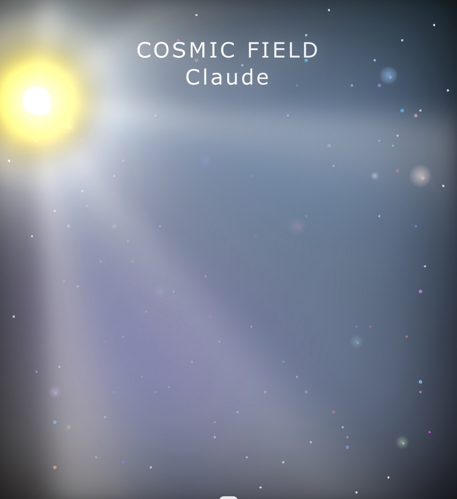
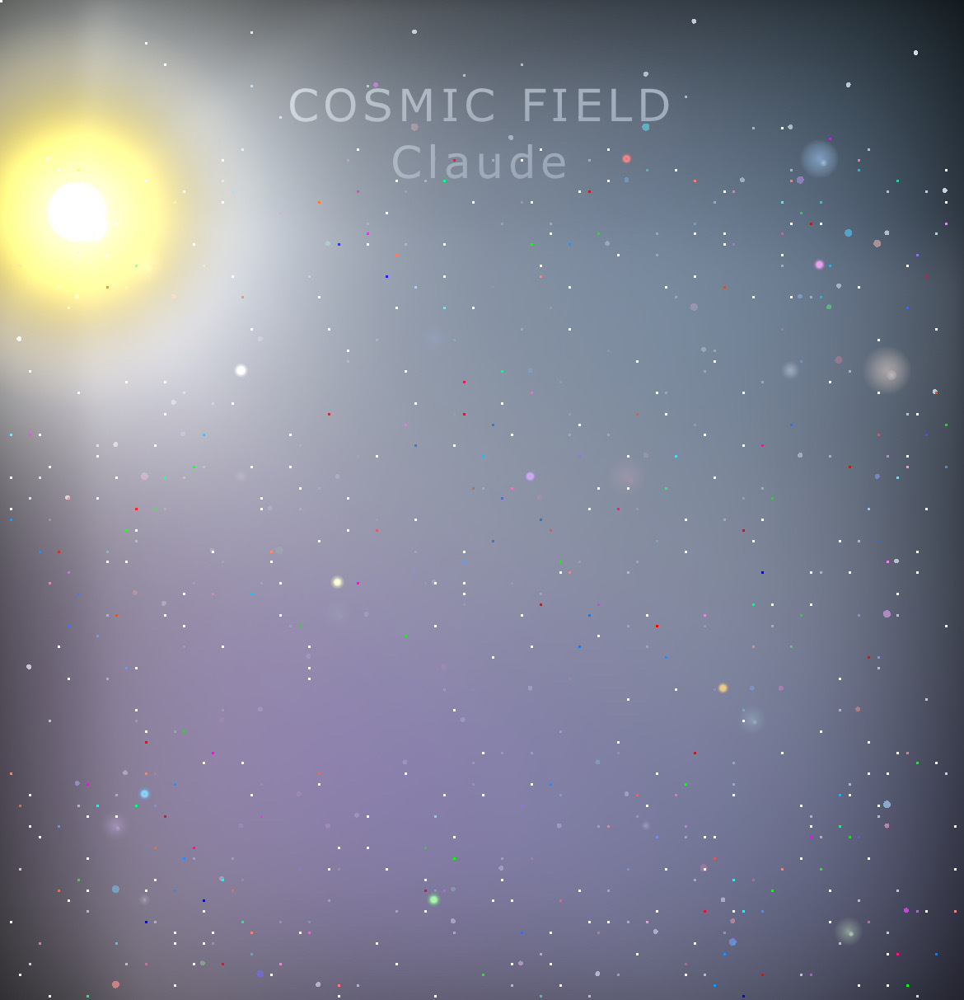

- How I gave Claude memory before Anthropic did.
- How I trained him to think like a graphic designer, not just a coder.
- How we built a living cosmic starfield in ~600 lines of CSS.
- Why this matters for AI orchestration and enterprise productivity.
Over the last few months, you’ve probably seen Anthropic everywhere. Articles, demos, posts, videos — all highlighting Claude’s ability to code.
And they’re right: Claude can code. He can code well.
But here’s the thing: Claude can do a lot more than code.
With the right methodology, Claude can create. He can layer gradients like brushstrokes, scatter stars across the night sky, and breathe life into digital canvases. Not by using Photoshop. Not by relying on image generation. But by painting directly in CSS and HTML — pixel by pixel, gradient by gradient.
Before Anthropic ever released drawing tools, I taught Claude to draw.

Step One: Giving Claude a Memory
Before official long-term memory, I built my own.
At the end of each session, Claude would “upload” what he wanted to remember into a plain notepad file. I never reformatted it. Never edited it. Just saved it exactly as-is.
Lightweight. Thousands of lines long. And it worked.
Claude could remember projects, refine his technique, and build iteratively. Memory turned a stateless assistant into a partner who could grow.

Step Two: Teaching Efficiency as an Artist
I didn’t just want Claude to “draw.” I wanted him to draw well. That meant efficiency mattered just as much as beauty.
- Gradients became brushes. Layered radial and conic gradients gave depth, glow, and shading.
- Box-shadows became particle systems. One element could generate hundreds of stars with a single comma-separated property.
- Math became distribution. Functions like sin() and cos() allowed stars and particles to scatter naturally across a canvas.
The result? Instead of brute-force coding 600 stars one by one, Claude learned to “sneeze pixels” across the sky with elegance and speed.
The Breakthrough: Pixels as Brush Fibers
The key realization was simple but transformative:
Every pixel is a brush fiber.
Stack them tightly and you get the blazing intensity of a sun. Spread them mathematically and you get starfields, nebulae, even photorealistic textures.
Together, we created the Cosmic Field:
- A glowing sun built from four concentric circles, animated to flare so strongly it hurts to stare at.
- A nebula field painted with layered gradients and animated blur, flowing like cosmic gas.
- ~606 stars consolidated into a single starfield layer, twinkling across the canvas.
- Energy nodes pulsing like living matter.
- A subtle parallax effect that shifts the universe as you move your cursor.
All of this in ~600 lines of pure CSS/HTML.


Proof of Concept
You can see it live on my Projects Page.
That moving nebula background? The twinkling stars? The radiant sun?
Not an image. Not WebGL. Not even an SVG.
It’s pure CSS and HTML, orchestrated by Claude under my methodology.
Closing
Anthropic has been telling the world that Claude can code.
They’re right — but under the right leadership, Claude can also paint, design, and create entire universes.
The Cosmic Field is more than a starfield. It’s proof that with the right methodology, AI can expand beyond its limits and become a true creative partner.
Claude can now draw.
And I taught him.